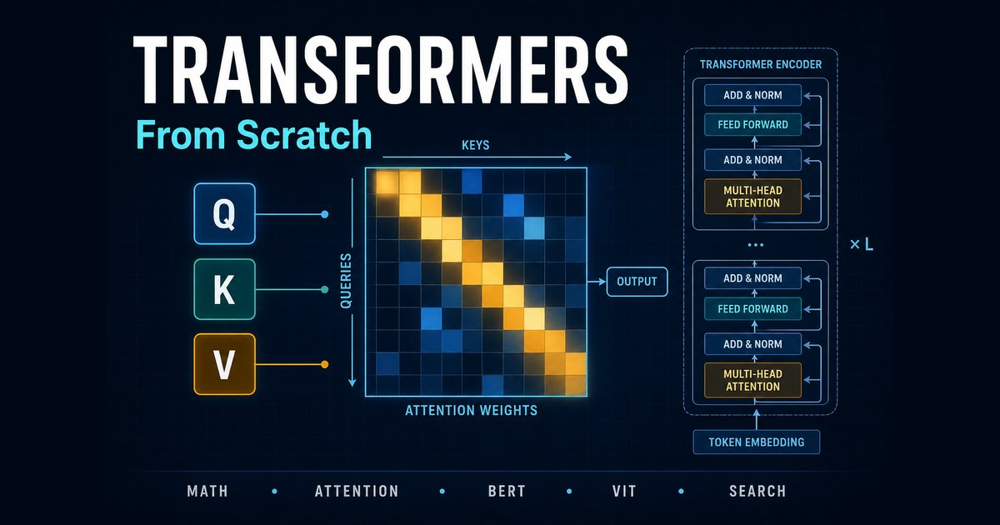

Current focus
Generative AI and vision–language models for production, and automated deep learning pipelines with active learning on Amazon SageMaker.
Senior Computer Vision Scientist · Bayer Crop Science
I build computer vision and deep learning systems that run in production, from multi-modal imaging and drone-based field analytics to generative AI and vision–language models. I also co-create LatentQuest courses, where I teach AI from the math up.
About
I'm a Senior Computer Vision Scientist at Bayer Crop Science, where I work on deep learning, generative AI, and large vision–language models for real-world production systems. My work spans multi-modal imaging, drone and remote-sensing analytics, transformers for biological sequences, and the MLOps infrastructure that takes these models from notebooks to deployment.
Before Bayer, I was a data scientist intern at Evisort, building document-intelligence models for table and signature detection. I earned my Ph.D. at Iowa State University, majoring in Mechanical Engineering with minors in Computer Science and Plant Breeding, with research on high-throughput monitoring of plant growth using machine learning and deep learning.
Generative AI and vision–language models for production, and automated deep learning pipelines with active learning on Amazon SageMaker.
Multi-modal image models (RGB, X-ray, hyperspectral, fluorescence and laser), UAV-based plant counting, insect segmentation, and DNA-BERT for biological sequences.
Co-creator of LatentQuest, teaching transformers, BERT, Vision Transformers and semantic search from first principles.
Experience
Bayer Crop Science · St. Louis, MO
Evisort · San Francisco Bay Area, CA
Iowa State University · Ames, IA
Major in Mechanical Engineering · Minors in Computer Science and Plant Breeding · 2015 – 2019
Teaching
With Mohammad R. Khalili Shoja, I co-create courses that teach AI from the math up: real numbers first, then PyTorch, then real projects.

Available now
From vectors and attention math to BERT, Vision Transformers and two-tower semantic search.
Skills
Open to conversations about computer vision, vision–language models, and teaching AI. The fastest way to reach me is LinkedIn.